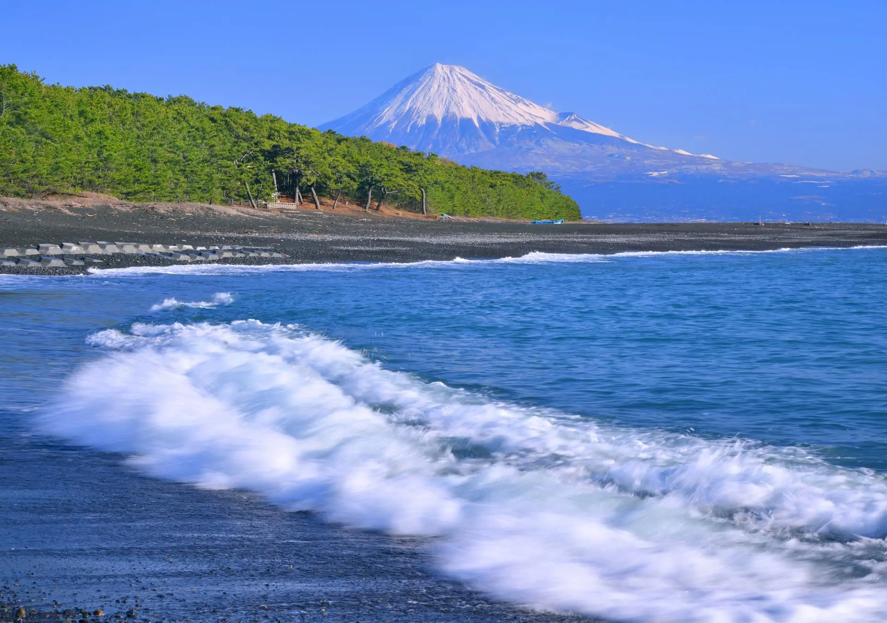
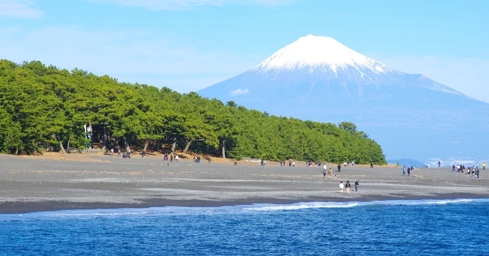

UNESCO 世界文化遺産 構成資産
Spot 01 • Miho no Matsubara
三保の松原について
日本の静岡県静岡市に位置する「三保の松原」は、日本を代表する美しく歴史的な景勝地の一つです。その比類なき自然美から多くの人々を魅了し続けており、2013年には富士山の構成資産の一つとしてユネスコの世界文化遺産に登録されました。
ここでの最大の魅力は、青々とした松林、打ち寄せる白い波、そしてその背後に雄大にそびえ立つ富士山を一度に望むことができる圧倒的な絶景です。これら三つの要素が織りなす風景は非常に象徴的であり、古くから多くの芸術家や歌川広重らの浮世絵にも描かれてきました。

天女伝説が眠る「羽衣の松」と神の道
潮風を感じる美しい海岸線
さらに、この地は日本の伝統的な天女の伝説である「羽衣の伝説」の舞台としても深く知られています。海岸近くには天女が衣を掛けたと伝えられる「羽衣の松」があり、近くの「御穂神社」へと続く「神の道」の厳かな雰囲気とともに、地域に深い歴史と神聖な息吹を与えています。松の葉擦れの音や潮風を感じながら海岸線を歩く時間は、何ものにも替えがたい安らぎをもたらしてくれます。
三保の松原は単なる美しい海岸線ではなく、日本の豊かな自然、歴史、そして文化が美しく調和した特別な場所です。訪れる人々に深い感動と静寂を与えてくれる、いつまでも大切にしたい名勝です。
✦ 三保の松原の魅力まとめ (Key Highlights)
- 圧倒的な絶景： 青々とした松林、白い波、そして雄大な富士山が織りなす完璧な風景。
- 歴史と伝説： 天女の「羽衣の伝説」が息づく羽衣の松と厳かな「神の道」。
🎟️ 入場料 (Admission)
無料 (Free)
海岸・松林・神の道は自由散策
⏱️ 目安時間 (Duration)
約 40 〜 60 分
海岸散策と神の道の往復
📸 ベスト撮影スポット
波打ち際の石碑前
松と海と富士山が1枚に収まる場所
📍 三保の松原 アクセスマップ
〒424-0901 静岡県静岡市清水区三保